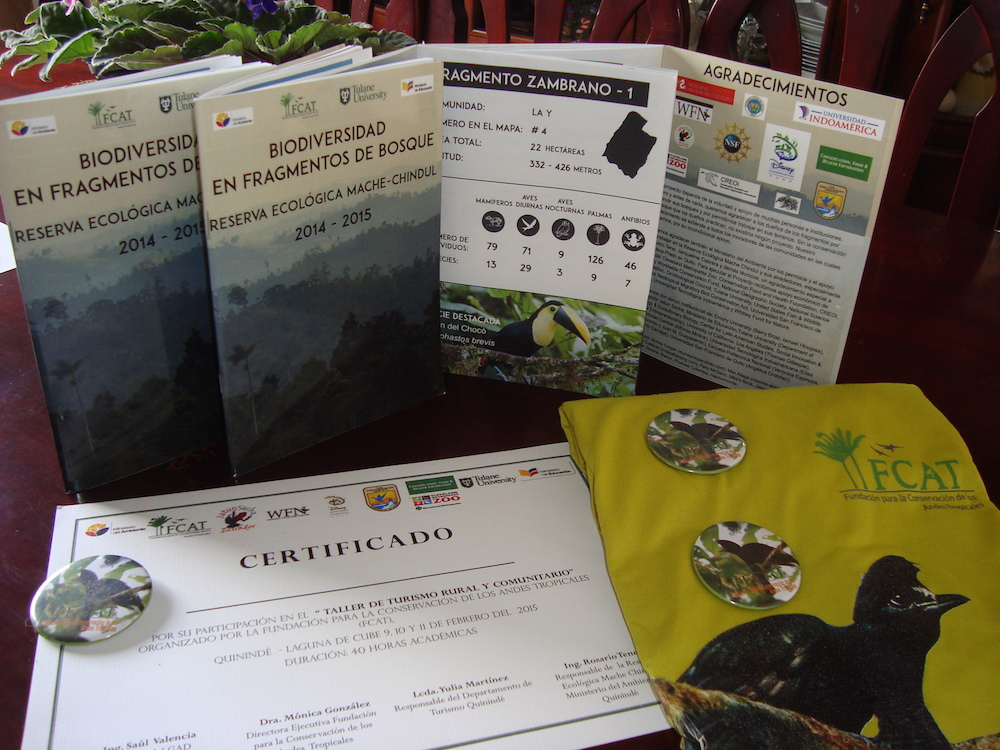

2020: Published projects with amazing former undergraduates Tadeo Ramírez Parada and Rachel Cook: El Niño driven fruiting phenology in palms & biodiversity of birds and mammals in a fragmented landscape in Ecuador.
Winter 2019: Started a new postdoc at the Yale School of Forestry and Environmental Studies focusing on the effects of El Niño-related drought on tropical forest dynamics.
Fall 2019: Paper on maladaptation to temperature in valley oak published in PNAS! BBC News and UCLA Newsroom both featured our study.
Summer 2019: Big changes underway! Accepted a position as a postdoctoral associate at the Yale School of Forestry and Environmental Studies for the Fall. Prepping for a cross-country move while traveling to Rhode Island to present at Evolution.
Fall 2018: Very happy and honored to be invited to be an inaugural member of the new Molecular Ecology / Molecular Ecology Resources Junior Editorial Board. Looking forward to helping shape the future of two of my favorite journals.
Spring 2018: After many hours in the lab and some intense fieldwork, I'm very pleased to see our study on the effects of habitat loss and fragmentation on pollen and seed dispersal published in Molecular Ecology! Link to PDF. In a companion paper also published in Molecular Ecology, we compared the effects of pollen and seed dispersal on genetic diversity in continuous forest. Link to PDF.
Spring 2018: Paper on the rare genotype survival advantage of Oenocarpus seedlings from our work in Ecuador accepted in New Phytologist! Link to PDF
Spring 2018: Very happy to teach a module on landscape conservation genomics for the UCLA La Kretz Center Conservation Genomics workshop, where I myself was a participant in 2014.
Fall 2017: Started as a postdoctoral fellow at the UCLA La Kretz Center for California Conservation Science working on integrating genomic and field data to improve predictions of the impacts of climate change on oak growth.
Spring 2017: Successfully defended PhD and served as instructor on Tropical Biology and Conservation field course in Ecuador. Also very honored to receive the 2016 OTS (Organization for Tropical Studies) Outstanding Student Paper award for our paper in Ecology Letters. You can check out the news release here.
Fall 2016: Paper on negative frequency-dependent selection in Oenocarpus seedlings published in Ecology Letters! Link to PDF
Summer 2016: Last field season in Ecuador, and study on the survival of Oenocarpus in umbrellabird leks published! Link to PDF
Fall 2015: Paper accepted! Diversity of palm communities at different spatial scales in a recently fragmented tropical landscape in Botanical Journal of Linnean Society special issue on palms – Link to PDF
Summer 2015: Busy summer - my first trip to Colombia to present at the World Palm Symposium, TA'ing Tropical Ecology and Conservation in Ecuador, completing another field season in Ecuador, and moving to Washington, DC for the academic year
Spring 2015: Awarded an NSF DDIG to study the relative contribution of seed and pollen dispersal to gene diversity in forest fragments for Oenocarpus bataua in Ecuador!
Climate change has the potential to cause a mismatch between the environmental conditions plants are adapted to and the environmental conditions they will face in the future. Working with the California endemic species Valley oak (Quercus lobata), in partnership with UCLA La Kretz Center for California Conservation Science and the U.S. Forest Service, I developed a framework on how to use genomic information to mitigate the potential negative consequences of rising temperatures on valley oak growth.
The loss of forests is one of the leading threats to global biodiversity and a major driver of carbon emissions. My research focuses on how forest loss and fragmentation in northwest Ecuador influences genetic diversity of the palm Oenocarpus bataua and species diversity of palm trees, mammals, and birds, while working with local communities to help reduce the impact of deforestation. I also investigate the role that individual-level genetic variation in plants impacts growth and survival to better understand the major drivers of tree recruitment.
El Niño events represent the largest source of year-to-year global climate variability, and as a result, have the potential to dramatically impact tropical forest dynamics. Working across a rainfall gradient on the Isthmus of Panama, I am investigating how species' traits impact their demographic responses to extended dry seasons caused by El Niño events, and whether species' responses vary based on their location along the rainfall gradient.
2020. R.N. Cook, T. Ramírez Parada, L. Browne, M. Ellis, and J. Karubian. Environmental correlates of richness, community composition, and functional traits of terrestrial birds and mammals in a fragmented tropical landscape. Landscape Ecology. 35:2825–2841. PDF
2020. T. Ramírez Parada, D. Cabrera, Z. Diaz-Martin, 2020. L. Browne, and J. Karubian. Access to sunlight and ENSO-driven climate variation predict individual and population-level flowering patterns in an asynchronously reproducing canopy palm. Biotropica. 52:845-856. PDF
2020. L. Browne, A. Mead, C. Horn, K. Chang, Z. Celikkol, C. Henriquez, F. Ma, E. Beraut, R. Meyer, and V.L. Sork. Experimental DNA demethylation associates with changes in growth and gene expression of oak tree seedlings. G3: Genes | Genomes | Genetics. 10:1019-1028. PDF
2019. L. Browne, S. Fitz-Gibbon, P. Gugger, and V.L. Sork. Adaptational lag to temperature in valley oak (Quercus lobata) can be mitigated by genome-informed assisted gene flow. Proceedings of the National Academy of Sciences. 116: 25179-25185. PDF
2019. V.L. Sork, L. Browne, S. Fitz-Gibbon, and M. Pellegrini. Potential role of epigenetic processes in oak population response to climate change. International Oaks. 30:177–184.
2018. L. Browne and J. Karubian. Habitat loss and fragmentation reduce effective gene flow by disrupting seed dispersal in a neotropical palm. Molecular Ecology. 27: 3055–3069. PDF
2018. L. Browne, K. Ottewell, V. L. Sork, and J. Karubian. The relative contributions of seed and pollen dispersal to gene flow and genetic diversity in seedlings of a tropical palm. Molecular Ecology. 27: 3159–3173. PDF
2018. L. Browne and J. Karubian. Rare genotype advantage promotes survival and genetic diversity of a tropical palm. New Phytologist. 218: 1658–1667. PDF
2018. K. Ottewell, L. Browne, D. Cabrera, J. Olivo, and J. Karubian. Genetic diversity of dispersed seeds is highly variable among leks of the long-wattled umbrellabird. Acta Oecologica. 86: 31–37. PDF
2018. J. Rivero de Aguilar, F. Castillo, A. Moreno, N. Peñafiel, L. Browne, S.T. Walter, J. Karubian, and E. Bonaccorso. Patterns of avian haemosporidian infections vary with time, but not habitat, in a fragmented Neotropical landscape. PLoS ONE. 13: e0206493. PDF
2018. M. Mahoney, L. Browne, Z. Diaz-Martin, J. Olivo, J. Cabrera, M. Gonzalez, J. Hazlehurst, and J. Karubian. Fruit removal by large avian frugivores varies in relation to habitat quality in continuous Neotropical rainforest. Ornitologia Neotropical. 29: 247–254. PDF
2017. S.T. Walter, L. Browne, J. Freile, N. González, J. Loor, M. Darkes, T. Gillespie, and J. Karubian. Nocturnal bird diversity in forest fragments in north-west Ecuador. Journal of Tropical Ecology. 33: 357–364. PDF
2017. S.T. Walter, L. Browne, J. Freile, J. Olivo, M. González, and J. Karubian. Landscape-level tree cover predicts species richness of large-bodied frugivorous birds in forest fragments. Biotropica. 49: 838–847. PDF
2016. L. Browne and J. Karubian. Frequency-dependent selection for rare genotypes promotes genetic diversity of a tropical palm. Ecology Letters. 19: 1439–1447. PDF
2016. J. Karubian, L. Browne, D. Cabrera, M. Chambers, and J. Olivo. Relative influence of relatedness, conspecific density and microhabitat on seedling survival and growth of an animal-dispersed Neotropical palm, Oenocarpus bataua. Botanical Journal of the Linnean Society. 182: 425–438. PDF
2016. L. Browne and J. Karubian. Diversity of palm communities at different spatial scales in a recently fragmented tropical landscape. Botanical Journal of the Linnean Society. 182: 451–464. PDF
2015. L. Browne, K. Ottewell, and J. Karubian. Short-term genetic consequences of habitat loss and fragmentation for the Neotropical palm Oenocarpus bataua. Heredity. 115: 389–395. PDF
2012. J. Karubian, L. Browne, C. Bosque, T. Carlo, M. Galetti, B. Loiselle, J. Blake, D. Cabrera, R. Durães, F. Labecca, K. Holbrook, R. Holland, W. Jetz, F. Kümmeth, J. Olivo, K. Ottewell, G. Papadakis, G. Rivas, S. Steiger, B. Voirin, and M. Wikelski. Seed dispersal by Neotropical birds: emerging patterns and underlying processes. Ornitologia Neotropical. 23: 9–24. PDF
FCAT is a conservation focused non-profit based in Ecuador, primarily composed of local residents of the Mache-Chindul Reserve, along with professional Ecuadorian conservationists, and international researchers (such as myself). Our mission is to stem the loss of species in the Ecuadorian Chocó by combining scientific research, community development, and environmental education. I've had the wonderful opportunity to collaborate with other members of FCAT in running large-scale biodiversity surveys, organizing annual environmental fairs attended by >1,000 local residents, technical training of local residents in research methods, presentations in local schools and international conferences, and grant-writing to raise funds for conservation efforts. Below are two examples of outreach products I've created that were distributed to local residents of the Mache-Chindul Reserve, teachers, and government officials. Closer to home in New Orleans, I haved participated in STEM outreach by judging science fairs and tutoring students in math and science at local public charter schools.
Camera trap montage
In 2014, our team spent 5 months using motion-activated camera traps to document the diversity of mammals and birds in forest fragments in the Mache-Chindul Reserve in Ecuador. This was among the largest-scale efforts to document biodiversity of animals in the reserve. As a way to highlight the diversity found in these small but diverse pieces of forest, I produced this montage featuring music by local musicians that was shown at a symposium for local landowners and residents in May 2015 in Ecuador.
Biodiversity Booklet
As a companion piece to the camera trap montage, we produced a ~40 page booklet that documents the diversity our team found in each of 22 forest fragments in our 5 month sampling effort, including the number of individuals and species of birds, amphibians, mammals, and palm trees. We printed over 100 copies of the booklet, and each landowner that participated in the fragment project, along with local teachers and officials from the Ministry of the Environment, received copies.
Email: lukembrowne@gmail.com
Research Gate | Google Scholar
Mail: 195 Prospect Street, New Haven, Conneticut, 06511